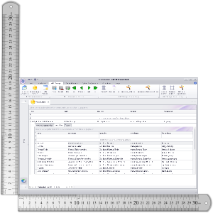

Softwareentwicklung kostet Zeit. Haben Sie die? Wenn nicht, lesen Sie weiter.
Der Aufwand, den Sie benötigen, entsteht zu Teilen aus den folgenden Disziplinen:
Planung, Analyse, Entwurf, Programmierung, sowie Validierung und Verifikation.
Reduzieren Sie Ihre Zeit, wo es geht.
Software wird in den meisten Firmen noch von Hand geschrieben, da sich viele nicht bewusst darüber sind, dass es auch anders geht. Viele Teile einer Software sind systematisch ähnlich und daher geeignet für eine automatische Code Generierung.
Nutzen Sie diese Möglichkeit!

Wir erhöhen die Qualität Ihrerer Software. In von Hand erstelltem Code schleichen sich gerne Fehler ein. Wir machan eben alle welche.
Durch Wiederholung von systematischem Code können so unterschiedliche Fehler entstehen, obwohl man glaubt, das gleiche gemacht zu haben. Wenn man einen Fehler dann behoben hat, sind nicht alle weg - wenn man die Wiederholungen mittels Copy&Paste erstellt hat.
Wird der Code dagegen aus einer Vorlage erstellt, brauchen Sie den Fehler nur in der Vorlage zu beheben und drücken einen Knopf!
Modellgetriebene Softwareentwicklung wird in diversen Foren und Puplikationen als vielversprechende Variante beschrieben, wie Sie Zeit sparen und Qualität steigern. Hier wird eine Möglichkeit aufgezeigt, wie Sie einen Teil davon erreichen können.
Starten Sie mit einem Projekt, so werden Sie zuerst die Anforderungen Ihrer Kunden bekommen, oder diese gemeinsam ermitteln. Alle Planunsaktivitäten sehe ich in diesem Szenario als erledigt an. Das Vorgehensmodell bedingt mehr oder weniger Modellgetriebene Softwareentwicklung, da aus einem Modell Software entsteht.

Die Analysephase der Softwareentwicklung beinhaltet folgende Themen: Auswertung, Mock-Up, Prozessanalyse / Prozessmodell, Systemanalyse, Strukturierte und Objektorientierte Analyse.
Hierbei stelle ich den Mock-Up in den Vordergrund, da dies bereits links dargestellt ist und eine vergleichsweise gut funktionierende Anwendung darstellt.
Die Üblichen Mock Verfahren basieren beispielsweise auf Wireframes, Klick Dummies, oder Folienpräsentationen von zusammengeschobenen Designs, oder Montagen aus Ihrer Entwicklungsumgebung.
Software soll aber so früh wie möglich funktionieren! Wieso malen dann Viele erst ein Bild oder erstellen einen Mock? Das Problem ist nicht der Mock, sondern die meist fehlende Weiterverarbeitbarkeit dieses Mocks. Können Sie Ihre weiterverarbeiten?
Wenn Sie Ihre Mockups weiterverarbeiten können, gratuliere ich Ihnen! Wenn nicht, dann werden Ihnen folgende Möglichkeiten gefallen: Achten Sie darauf, dass Ihre Mockups aus XML Dateien bestehen, die allenfalls Bilder referenzieren. Verwenden Sie in Ihrem Mock schon richtige Bezeichner für die darzustellenden Inhalte.
Diese Informationen reichen für die Erste Etappe aus. Zusammen mit den Informationen, wie Name der Maske, Ort / Pfad in Ihrem Projekt und den Feldern, die ordentlich benannt sind, sowie den Typen der Felder (Zahl, Text, Währung,...) steht einer Weiterverarbeitung nichts im Weg.